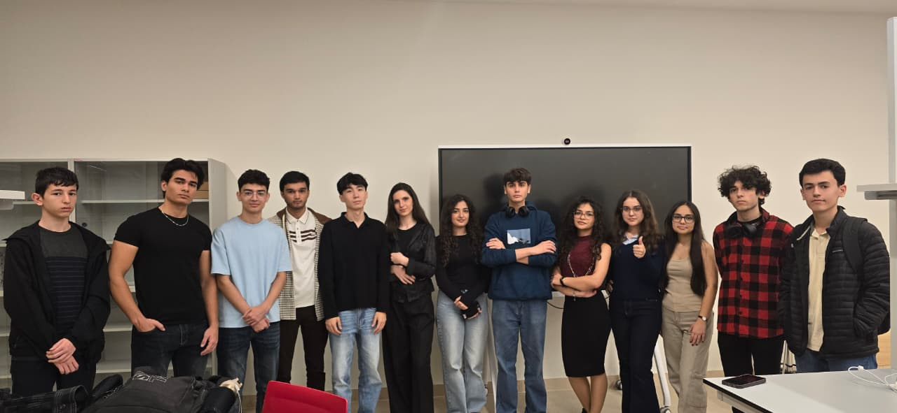

Project 1: How does hardware work?
In this section, I would like to introduce a very fun group project we were assigned to, that covers the basics of hardware. .
Our NAND Bonus Gate
In this project, our team built a NAND gate using only transistors, resistors, and wires. The NAND gate is a fundamental building block in digital electronics, as it can be used to create any other logic gate. By connecting the components in a specific configuration, we were able to demonstrate how the NAND gate operates, producing an output that is false only when both inputs are true.
My Contribution
As a member of Group 52, I constructed the NOT gate for our project. Our collaboration team agreed to implement the AND gate, allowing us to later combine our individual components for a bonus NAND gate. Beyond my construction role, I also took initiative to document our process, filming my team members as they worked on their respective parts of the project. The photo on the left is the finished look of NOT gate.
(P.S. You can see me busy with holding the phone here to film the process:))
Our XOR Bonus Gate
Our team successfully designed and assembled a transistor-based XOR gate, a critical component in digital systems and arithmetic units. This hands-on project allowed us to map out the specific hardware configurations required to achieve 'exclusive OR' logic, where the circuit only completes when exactly one signal is present.

Collaboration at its finest! 🤝
We teamed up with three other groups to tackle the project’s most challenging milestone: the bonus XOR gate. Despite the technical complexity, our synergy was incredible; through intense brainstorming and coordination, we successfully constructed the gate in under 30 minutes! It was a time-consuming challenge that was as rewarding as it was enjoyable.
Here is a memory photo that we took with our XOR team members after finishing the project🌟
